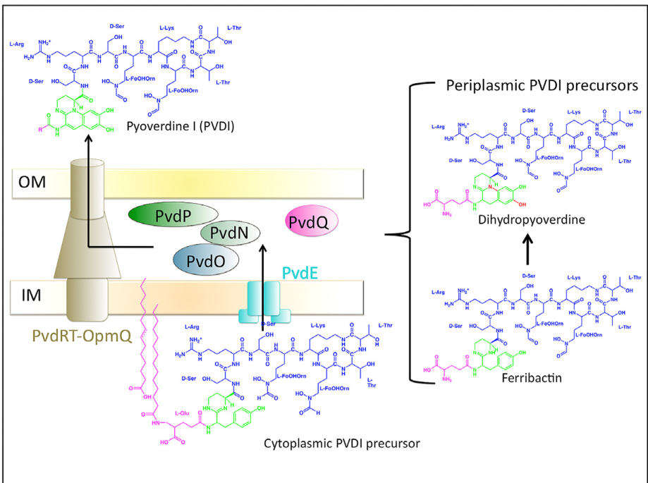

Large cytosolic multimodular non-ribosomal peptide synthetase required for pyoverdine biosynthesis in Pseudomonas putida KT2440. The protein contains repeated adenylation, condensation, phosphopantetheine carrier, and terminal thioesterase domains, and is part of the pyoverdine assembly line rather than the enterobactin pathway. Loss of pvdD abolishes pyoverdine production and contributes to defects in siderophore-dependent iron acquisition and oxidative-stress adaptation.
Definition: A multienzyme complex composed of pyoverdine biosynthetic enzymes that assemble and offload the pyoverdine peptide scaffold during pyoverdine biosynthesis.
Justification: Automated annotations currently over-transfer the enterobactin-specific complex term to pyoverdine NRPS proteins because GO lacks a pyoverdine-specific synthetase complex term.
| GO Term | Evidence | Action | Reason |
|---|---|---|---|
|
GO:0003824
catalytic activity
|
IEA
GO_REF:0000002 |
MODIFY |
Summary: True only in an uninformative sense. PvdD is a multimodular non-ribosomal peptide synthetase, so the generic term should be replaced with the specific NRPS activity term.
Reason: Generic catalytic activity is uninformative for a multimodular NRPS. Falcon deep research confirms PvdD is a pyoverdine-pathway NRPS that assembles peptide via a thiotemplate mechanism, so the specific NRPS activity term better captures its molecular function.
Proposed replacements:
non-ribosomal peptide synthetase activity
Supporting Evidence:
file:PSEPK/pvdD/pvdD-notes.md
Generic `catalytic activity` is too weak; the protein is better described as a non-ribosomal peptide synthetase with amino acid ligation chemistry and phosphopantetheine-dependent carrier modules.
file:PSEPK/pvdD/pvdD-deep-research-falcon.md
NRPSs are large modular enzymes that assemble peptides via a thiotemplate mechanism
|
|
GO:0005737
cytoplasm
|
IEA
GO_REF:0000118 |
MODIFY |
Summary: Broad but directionally correct for a soluble bacterial NRPS. The more specific localization term GO:0005829 cytosol is preferable and is already represented separately.
Reason: Cytoplasm is correct but under-specific. Falcon deep research confirms pyoverdine peptide assembly begins in the cytoplasm and that the PvdD-class NRPSs explore the cytoplasm, supporting the more specific cytosol localization term.
Proposed replacements:
cytosol
Supporting Evidence:
file:PSEPK/pvdD/pvdD-notes.md
`cytosol` is the better localization term over generic `cytoplasm` for this large soluble bacterial NRPS.
file:PSEPK/pvdD/pvdD-deep-research-falcon.md
pyoverdine synthesis begins in the cytoplasm
|
|
GO:0005829
cytosol
|
IEA
GO_REF:0000118 |
ACCEPT |
Summary: Appropriate localization for a giant soluble NRPS that lacks membrane-targeting features and operates prior to pyoverdine export and periplasmic maturation.
Reason: Cytosol is the correct localization. Falcon deep research confirms PvdD-mediated peptide assembly occurs in the cytoplasm before precursor export across the inner membrane and periplasmic maturation.
Supporting Evidence:
file:PSEPK/pvdD/pvdD-deep-research-falcon.md
pyoverdine synthesis begins in the cytoplasm
file:PSEPK/pvdD/pvdD-deep-research-falcon.md
PvdI/PvdJ/PvdD explore the cytoplasm
|
|
GO:0009239
enterobactin biosynthetic process
|
IEA
GO_REF:0000118 |
MODIFY |
Summary: Incorrect specific process. P. putida KT2440 produces pyoverdine rather than enterobactin, so the correct process term is pyoverdine biosynthetic process.
Reason: The enterobactin process is an over-transfer error. Falcon deep research confirms PvdD is the pyoverdine NRPS in KT2440 and that a pvdD mutant does not produce pyoverdine, so the correct process is pyoverdine biosynthesis, not enterobactin.
Proposed replacements:
pyoverdine biosynthetic process
Supporting Evidence:
file:PSEPK/pvdD/pvdD-notes.md
Enterobactin-specific terms in the seeded GOA are incorrect for `pvdD`; they should be replaced with pyoverdine- or siderophore-specific process terms.
file:PSEPK/pvdD/pvdD-deep-research-falcon.md
pvdD is explicitly identified as PP_4219 encoding a pyoverdine nonribosomal peptide synthetase
|
|
GO:0009366
enterobactin synthetase complex
|
IEA
GO_REF:0000118 |
REMOVE |
Summary: Incorrect complex term. PvdD belongs to the pyoverdine NRPS assembly line, not the enterobactin synthetase complex, and GO currently lacks a pyoverdine-specific synthetase complex term.
Reason: Wrong siderophore family. Falcon deep research confirms PvdD is part of the pyoverdine NRPS assembly line (PvdL/PvdI/PvdJ/PvdD), which forms dynamic cytoplasmic NRPS assemblies rather than the enterobactin synthetase complex; GO lacks a pyoverdine-specific complex term, so the annotation should be removed rather than modified.
Supporting Evidence:
file:PSEPK/pvdD/pvdD-notes.md
GO has `pyoverdine biosynthetic process` but lacks a pyoverdine-specific synthetase complex term; this absence likely drives over-transfer to `enterobactin synthetase complex`.
file:PSEPK/pvdD/pvdD-deep-research-falcon.md
PvdI/PvdJ/PvdD explore the cytoplasm
|
|
GO:0031177
phosphopantetheine binding
|
IEA
GO_REF:0000120 |
MODIFY |
Summary: The underlying biology is sound because PvdD contains multiple phosphopantetheine-dependent carrier domains, but the better term is the more functional carrier-activity term rather than generic binding.
Reason: Phosphopantetheine binding is correct but under-specific. Falcon deep research confirms the PCP/carrier domains covalently tether the activated monomer on a phosphopantetheine arm, which is captured by the more functional carrier-activity term rather than generic binding.
Proposed replacements:
phosphopantetheine-dependent carrier activity
Supporting Evidence:
file:PSEPK/pvdD/pvdD-notes.md
phosphopantetheine binding is directionally right but under-specific for this enzyme class; phosphopantetheine-dependent carrier activity better captures the carrier-module function of the PCP domains.
file:PSEPK/pvdD/pvdD-deep-research-falcon.md
covalently tethers the activated monomer on a phosphopantetheine arm
|
|
GO:0043041
amino acid activation for nonribosomal peptide biosynthetic process
|
IEA
GO_REF:0000120 |
KEEP AS NON CORE |
Summary: Accurate mechanistic process annotation for the adenylation modules of PvdD. It captures an authentic sub-process of NRPS catalysis, but is less informative than the pyoverdine-specific biosynthetic process term.
Reason: Keep as a true but non-core mechanistic sub-process. Falcon deep research confirms the adenylation domains select and activate monomer substrates as part of the thiotemplate NRPS mechanism, but the core process of pvdD is pyoverdine biosynthesis.
Supporting Evidence:
file:PSEPK/pvdD/pvdD-deep-research-falcon.md
NRPSs are large modular enzymes that assemble peptides via a thiotemplate mechanism
|
|
GO:0044550
secondary metabolite biosynthetic process
|
IEA
GO_REF:0000120 |
MODIFY |
Summary: Too broad. PvdD functions specifically in siderophore biosynthesis, and the broader secondary-metabolite term obscures that biology.
Reason: Secondary metabolite biosynthesis is too broad. Falcon deep research confirms PvdD is required for production of the pyoverdine siderophore and that a pvdD mutant leaves more iron in supernatants than wild type, so the specific siderophore biosynthetic process term is more informative.
Proposed replacements:
siderophore biosynthetic process
Supporting Evidence:
file:PSEPK/pvdD/pvdD-deep-research-falcon.md
consistent with PvdD being an essential biosynthetic enzyme for siderophore formation under iron limitation
file:PSEPK/pvdD/pvdD-deep-research-falcon.md
pvdD mutant left more iron in supernatants than wild type
|
|
GO:0047527
2,3-dihydroxybenzoate-serine ligase activity
|
IEA
GO_REF:0000118 |
MODIFY |
Summary: Wrong substrate/product and wrong siderophore family. PvdD is not the enterobactin enzyme EntF; the analogous correct activity is amino acid ligation by a non-ribosomal peptide synthase.
Reason: The DHB-serine ligase activity is an enterobactin (EntF) over-transfer error. Falcon deep research indicates PvdD catalyzes addition of amino-acid residues (e.g. L-Lys, L-hfOrn, and L-Thr) as a pyoverdine NRPS, so the correct molecular function is amino acid ligation activity by a nonribosomal peptide synthase.
Proposed replacements:
amino acid ligation activity by nonribosomal peptide synthase
Supporting Evidence:
file:PSEPK/pvdD/pvdD-deep-research-falcon.md
PvdJ and PvdD catalyze addition of L-Lys, L-hfOrn, and two L-Thr residues
|
|
GO:0072330
monocarboxylic acid biosynthetic process
|
IEA
GO_REF:0000117 |
REMOVE |
Summary: Unhelpful and not convincingly representative of pvdD biology. The informative curated process annotations for this gene are pyoverdine and siderophore biosynthesis.
Reason: Monocarboxylic acid biosynthesis is a spurious ARBA over-generalization that does not represent pvdD biology. Falcon deep research establishes the relevant biosynthetic processes as pyoverdine and siderophore biosynthesis, so this term should be removed.
Supporting Evidence:
file:PSEPK/pvdD/pvdD-deep-research-falcon.md
pvdD is explicitly identified as PP_4219 encoding a pyoverdine nonribosomal peptide synthetase
|
Q: Which amino acid substrate is selected by each adenylation module of KT2440 PvdD, and how does that map onto the G4R/G4R A pyoverdine peptide products?
Q: Does PvdD form a stable biosynthetic complex with PvdI, PvdJ, and PvdL, or are the pyoverdine NRPS proteins coordinated through transient module handoffs?
Q: Which phosphopantetheinyl transferase activates the three carrier domains of PvdD in KT2440, and is that activation regulated by iron availability?
Experiment: Clone and purify individual adenylation modules or module pairs from PvdD and test substrate preference by ATP-PPi exchange or adenylation assays with candidate amino acids from the KT2440 pyoverdine peptide.
Hypothesis: PvdD adenylation modules have distinct substrate specificities that determine the KT2440 pyoverdine peptide sequence.
Type: biochemical assay
Experiment: Mutate the conserved phosphopantetheinylated serine in each carrier domain and measure pyoverdine production and intermediate accumulation by LC-MS.
Hypothesis: The carrier domains of PvdD are required as active phosphopantetheine-tethered intermediates during pyoverdine assembly.
Type: mutagenesis study
Experiment: Test interaction of PvdD with PvdI, PvdJ, and PvdL by co-immunoprecipitation, cross-linking mass spectrometry, or bacterial two-hybrid assays under iron-limited conditions.
Hypothesis: PvdD participates in a coordinated pyoverdine NRPS assembly line in the cytosol.
Type: protein interaction study
The research report should be a detailed narrative explaining the function, biological processes, and localization of the gene product. Citations should be given for all claims.
You should prioritize authoritative reviews and primary scientific literature when conducting research. You can supplement
this with annotations you find in gene/protein databases, but these can be outdated or inaccurate.
We are specifically interested in the primary function of the gene - for enzymes, what reaction is catalyzed, and what is the substrate specificity? For transporters, what is the substrate? For structural proteins or adapters, what is the broader structural role? For signaling molecules, what is the role in the pathway.
We are interested in where in or outside the cell the gene product carries out its function.
We are also interested in the signaling or biochemical pathways in which the gene functions. We are less interested in broad pleiotropic effects, except where these elucidate the precise role.
Include evidence where possible. We are interested in both experimental evidence as well as inference from structure, evolution, or bioinformatic analysis. Precise studies should be prioritized over high-throughput, where available.
Verified target: UniProt Q88F79 corresponds to pvdD / ordered locus PP_4219 in Pseudomonas putida strain KT2440. In a KT2440-focused experimental study, pvdD is explicitly identified as PP_4219 encoding a pyoverdine nonribosomal peptide synthetase (NRPS), and a pvdD mutant is used as a non-pyoverdine-producing control, supporting that this symbol refers to the pyoverdine NRPS in this strain (not a different “pvdD” in another organism). (barrientosmoreno2019argininebiosynthesismodulates pages 2-5)
Ambiguity note (controlled): “pvdD” is used across multiple Pseudomonas species/strains for a pyoverdine-pathway NRPS. Mechanistic details (module-by-module residue assignment, NRPS complex architecture) are best established in P. aeruginosa and are used here as homologous inference where KT2440-specific biochemical evidence is not available; such inferences are explicitly labeled. (schalk2013pyoverdinebiosynthesisand pages 2-3)
Pyoverdines are fluorescent siderophores produced by many fluorescent pseudomonads to acquire iron under iron limitation. Biosynthesis proceeds via a non-fluorescent, acylated precursor (“ferribactin” / cytoplasmic precursor) assembled by NRPS enzymes; subsequent maturation steps yield fluorescent pyoverdine. (dell’anno2022novelinsightson pages 8-9, schalk2013pyoverdinebiosynthesisand pages 2-3)
NRPSs are large modular enzymes that assemble peptides via a thiotemplate mechanism. A typical module contains:
- Adenylation (A) domain: selects/activates a monomer substrate.
- Peptidyl carrier protein (PCP/T) domain: covalently tethers the activated monomer on a phosphopantetheine arm.
- Condensation (C) domain: forms peptide bonds.
Termination modules often include a thioesterase (TE) domain to release the product. (dell’anno2022novelinsightson pages 8-9, schalk2013pyoverdinebiosynthesisand pages 2-3)
PvdD is a pyoverdine-pathway NRPS required for pyoverdine production in P. putida KT2440. A pvdD mutant “does not produce pyoverdine,” consistent with PvdD being an essential biosynthetic enzyme for siderophore formation under iron limitation. (barrientosmoreno2019argininebiosynthesismodulates pages 2-5)
The pathway literature establishes that pyoverdine precursor assembly is performed by multimodular NRPSs (PvdL/PvdI/PvdJ/PvdD in canonical systems), each module incorporating a defined residue; the final product is released by a thioesterase domain in the termination module. (dell’anno2022novelinsightson pages 8-9, schalk2013pyoverdinebiosynthesisand pages 2-3)
Although KT2440-specific module mapping for Q88F79 is not provided in the retrieved KT2440 papers, the identification of pvdD as an NRPS in KT2440 and the UniProt-provided domain family context (AMP-binding/A-domain and carrier-like features) is consistent with this conserved NRPS mechanism. (barrientosmoreno2019argininebiosynthesismodulates pages 2-5, dell’anno2022novelinsightson pages 8-9)
Direct KT2440 biochemical substrate-assignment for Q88F79 was not found in the retrieved KT2440 experimental literature.
Homologous/consensus inference from well-characterized systems: In P. aeruginosa PAO1 and related models, PvdD is consistently described as the terminal NRPS and is commonly associated with incorporation of terminal residues and product release by TE. In a 2013 review, PvdD is described as the only pyoverdine NRPS ending with a TE domain, arguing for its role in release at the end of assembly. (schalk2013pyoverdinebiosynthesisand pages 2-3)
A 2022 review further reports that PvdJ and PvdD catalyze addition of L-Lys, L-hfOrn, and two L-Thr residues in a representative biosynthetic scheme; this assigns PvdD to late-stage incorporation steps (species-context dependent). (dell’anno2022novelinsightson pages 8-9)
A-domain specificity evidence (mechanistic insight from 2024): Engineering work on P. aeruginosa PvdD identifies specificity-code positions in a PvdD adenylation domain and notes a residue (Trp194) “frequently present in Thr specific A-domain,” supporting Thr-like specificity features in at least one PvdD A-domain in that system. (puja2024biosynthesisofa pages 9-10)
A widely accepted model is that pyoverdine synthesis begins in the cytoplasm (NRPS assembly of the non-fluorescent precursor) and ends in the periplasm, where maturation/tailoring reactions occur; mature pyoverdine is then secreted to the extracellular milieu. (dell’anno2022novelinsightson pages 8-9, schalk2013pyoverdinebiosynthesisand pages 2-3)
In this model, the cytoplasmic precursor is exported across the inner membrane by the ABC transporter PvdE into the periplasm for maturation steps. (dell’anno2022novelinsightson pages 8-9, stein2023therndefflux pages 10-13)
High-resolution single-molecule imaging in P. aeruginosa (homology-based evidence) supports a spatial organization in which NRPSs form discrete puncta and partially co-localize. PvdL is predominantly inner-membrane-associated, while PvdI/PvdJ/PvdD explore the cytoplasm and show partial co-localization with PvdL, consistent with dynamic NRPS complexes. (manko2024pvdlorchestratesthe pages 2-5, manko2024pvdlorchestratesthe pages 1-2)
Quantitative interaction evidence includes:
- FLIM-FRET showing a PvdL–PvdD interaction: τd ≈ 2.3 ns vs τda ≈ 2.0 ns; FRET efficiency ≈ 0.13. (manko2024pvdlorchestratesthe pages 8-10)
- DNA-PAINT co-localization: median Mander’s overlap coefficients for PvdL/PvdD ≈ 0.4 (and PvdL/PvdI ≈ 0.6; PvdL/PvdJ ≈ 0.3), supporting partial co-localization rather than a fully stable complex. (manko2024pvdlorchestratesthe pages 8-10)
Inference for KT2440: While these imaging results are in P. aeruginosa, they support a plausible conserved principle: PvdD functions on the cytoplasmic side (where peptide assembly occurs) and may participate in dynamic multi-enzyme assemblies near the inner membrane. (schalk2013pyoverdinebiosynthesisand pages 2-3, manko2024pvdlorchestratesthe pages 8-10)
In KT2440, pvdD disruption abolishes pyoverdine production (phenotypic control). (barrientosmoreno2019argininebiosynthesismodulates pages 2-5)
In iron-uptake measurements, the pvdD mutant leaves more iron in supernatants than wild type, indicating reduced iron incorporation; differences were statistically significant (P ≤ 0.01, Student’s t test). (barrientosmoreno2019argininebiosynthesismodulates pages 2-5)
In KT2440 arginine-biosynthesis mutants (ΔargG, ΔargH), pvdD and pvdA expression increased ~3–5×, while pvdE decreased ~2.5×, demonstrating condition-dependent regulation of structural genes and export machinery. (barrientosmoreno2019argininebiosynthesismodulates pages 2-5)
A 2023 study in P. putida KT2440 emphasizes that pyoverdine is synthesized in the cytosol and matures in the periplasm, with export relying on overlapping tripartite efflux systems. PvdRT-OpmQ is highlighted as a major secretion system, with MdtABC-OpmB and ParXY contributing under certain conditions—illustrating that pyoverdine production (including PvdD-dependent synthesis) must be interpreted together with secretion capacity. (stein2023therndefflux pages 10-13, stein2023therndefflux pages 1-2)
Single-molecule microscopy and quantitative co-localization/FRET data provide an updated view of how pyoverdine NRPSs (including PvdD) are spatially organized and interact in vivo (in P. aeruginosa). This supports the “siderosome” concept as a dynamic mixture of co-localized and freely diffusing NRPS fractions. (manko2024pvdlorchestratesthe pages 2-5, manko2024pvdlorchestratesthe pages 8-10)
A 2024 synthetic biology study engineered the PvdD adenylation domain (in P. aeruginosa) to incorporate an unnatural amino acid (azido-L-homoalanine), producing an azide-functionalized pyoverdine that supports copper-free click chemistry and remains recognized/transported by the native uptake machinery. This work demonstrates that PvdD A-domain specificity is engineerable in vivo and provides a route to functionalized siderophores for conjugation applications. (puja2024biosynthesisofa pages 1-2, puja2024biosynthesisofa pages 10-12)
A 2022 review reports Gallium-68-labeled pyoverdine evaluated for PET imaging to localize infections, with specific accumulation in infected tissue and favorable distribution compared with common tracers (qualitative summary). (dell’anno2022novelinsightson pages 12-13)
The same review summarizes pyoverdine–antibiotic conjugates, including historical pyoverdine–ampicillin conjugates tested against ampicillin-resistant P. aeruginosa strains (qualitative summary), and discusses the rationale for siderophore-mediated uptake as a delivery vector. (dell’anno2022novelinsightson pages 12-13)
The 2024 engineering study provides a concrete implementation: click conjugation to generate a pyoverdine–payload conjugate, with recovery of 4.9 mg conjugate (reported in the excerpt) and retention of iron chelation and uptake. (puja2024biosynthesisofa pages 10-12)
The 2022 review highlights that broad implementation is limited by production and analytics: commercial availability is scarce (example price ~200 €/mg for one pyoverdine), motivating engineered non-pathogenic production hosts and improved high-throughput detection. (dell’anno2022novelinsightson pages 17-19)
It also reports an analytical performance statistic for LC-ICP-MS workflows: sensitivity better than <1 picomole of iron, and characteristic MS fragments used for identification in complex matrices. (dell’anno2022novelinsightson pages 17-19)
Two authoritative reviews provide consensus “expert synthesis” that informs functional annotation of PvdD:
- Pyoverdine biosynthesis is a compartmentalized assembly line: cytoplasmic NRPS assembly followed by periplasmic maturation and secretion. (dell’anno2022novelinsightson pages 8-9, schalk2013pyoverdinebiosynthesisand pages 2-3)
- Pathway diversity among Pseudomonas strains largely arises from NRPS adenylation-domain substrate specificities, meaning residue assignments can vary by strain; therefore, KT2440-specific substrate specificity should ideally be verified by direct biochemical/structural characterization of Q88F79. (schalk2013pyoverdinebiosynthesisand pages 2-3)
| Evidence item | Functional claim | System/organism (KT2440 vs P. aeruginosa) | Key mechanistic detail (domains/modules/substrates/localization) | Primary citation (with year and DOI/URL) |
|---|---|---|---|---|
| Gene identity and mutant phenotype | pvdD = PP_4219 / UniProt Q88F79 encodes a pyoverdine nonribosomal peptide synthetase required for pyoverdine production | P. putida KT2440 | In KT2440, a pvdD mutant does not produce pyoverdine and was used as a negative control in pyoverdine fluorescence/CAS assays; supports direct role in siderophore biosynthesis under iron limitation (barrientosmoreno2019argininebiosynthesismodulates pages 2-5) | Barrientos-Moreno et al., 2019, J Bacteriol; DOI: 10.1128/JB.00454-19; https://doi.org/10.1128/JB.00454-19 |
| Iron-related phenotype | pvdD contributes to efficient iron acquisition via pyoverdine production | P. putida KT2440 | In iron-uptake assays, the pvdD mutant left more iron in supernatants than wild type with significant differences (P ≤ 0.01), consistent with impaired pyoverdine-mediated iron capture (barrientosmoreno2019argininebiosynthesismodulates pages 2-5) | Barrientos-Moreno et al., 2019, J Bacteriol; DOI: 10.1128/JB.00454-19; https://doi.org/10.1128/JB.00454-19 |
| Regulatory response | pvdD transcription is responsive to metabolic/iron-stress context | P. putida KT2440 | In arginine-biosynthesis mutants, pvdD expression increased ~3–5-fold relative to wild type, linking pyoverdine NRPS expression to iron/oxidative-stress homeostasis (barrientosmoreno2019argininebiosynthesismodulates pages 2-5) | Barrientos-Moreno et al., 2019, J Bacteriol; DOI: 10.1128/JB.00454-19; https://doi.org/10.1128/JB.00454-19 |
| Enzyme class | PvdD is an NRPS in the ATP-dependent AMP-binding enzyme family | KT2440 target; broader Pseudomonas context | Reviews describe pyoverdine biosynthesis as driven by large modular NRPSs with A (adenylation), PCP/T (carrier), and C (condensation) domains; the provided UniProt domain set for Q88F79 is consistent with this architecture (dell’anno2022novelinsightson pages 8-9, schalk2013pyoverdinebiosynthesisand pages 2-3) | Dell’Anno et al., 2022, Int J Mol Sci; DOI: 10.3390/ijms231911507; https://doi.org/10.3390/ijms231911507 |
| Terminal assembly-line role | PvdD functions as the terminal pyoverdine NRPS in the assembly line | Evidence from P. aeruginosa; used as homologous inference for KT2440 | In the best-characterized pyoverdine system, peptide assembly proceeds through PvdL → PvdI → PvdJ → PvdD, and PvdD is the only NRPS ending in a thioesterase domain, supporting product release at the end of assembly (schalk2013pyoverdinebiosynthesisand pages 2-3) | Schalk & Guillon, 2013, Environ Microbiol; DOI: 10.1111/1462-2920.12013; https://doi.org/10.1111/1462-2920.12013 |
| Substrate incorporation | PvdD is implicated in adding the final threonine residue(s) of pyoverdine/ferribactin | Evidence from P. aeruginosa; likely homologous inference for KT2440 | One review states that PvdJ + PvdD add L-Lys, L-hfOrn, and two L-Thr residues; engineering studies further describe PvdD as a bimodular terminal NRPS incorporating the final two L-Thr residues (dell’anno2022novelinsightson pages 8-9, messenger2019ahighthroughputapproach pages 18-21) | Dell’Anno et al., 2022, Int J Mol Sci; DOI: 10.3390/ijms231911507; https://doi.org/10.3390/ijms231911507 |
| Adenylation-domain specificity | At least one PvdD A-domain has Thr-type specificity features and can be engineered | Evidence from P. aeruginosa; mechanistic inference only | A 2024 study identifies Trp194 in PvdD(A1) as one of the 8 canonical specificity-code residues and notes it is common in Thr-specific A-domains; engineered mutants enabled incorporation of azido-L-homoalanine into pyoverdine analogs (puja2024biosynthesisofa pages 1-2, puja2024biosynthesisofa pages 9-10) | Puja et al., 2024, Microb Cell Fact; DOI: 10.1186/s12934-024-02472-4; https://doi.org/10.1186/s12934-024-02472-4 |
| Cellular localization | PvdD-mediated peptide assembly occurs in the cytoplasm, before precursor export and periplasmic maturation | General Pseudomonas model; applicable by homology to KT2440 pyoverdine pathway | Pyoverdine synthesis begins in the cytoplasm and ends in the periplasm; NRPSs assemble the non-fluorescent precursor, which is exported by PvdE, then matured in the periplasm by enzymes such as PvdQ/PvdP/PvdO (dell’anno2022novelinsightson pages 8-9, schalk2013pyoverdinebiosynthesisand pages 2-3, ringel2018thebiosynthesisof pages 6-7) | Ringel & Brüser, 2018, Microbial Cell; DOI: 10.15698/mic2018.10.649; https://doi.org/10.15698/mic2018.10.649 |
| Pathway context in KT2440 | pvdD is part of the KT2440 pyoverdine circuit, whose product is secreted by overlapping efflux systems | P. putida KT2440 | KT2440 uses pyoverdine as its main siderophore; recent work shows secretion involves PvdRT-OpmQ, MdtABC-OpmB, and conditionally ParXY, placing pvdD in a validated siderophore biosynthesis/export network (schalk2013pyoverdinebiosynthesisand media e1e1d8e3) | Stein et al., 2023, Microbiology Spectrum; DOI: 10.1128/spectrum.02300-23; https://doi.org/10.1128/spectrum.02300-23 |
| Confidence/limitation note | Core function in KT2440 is well supported, but exact residue assignment for Q88F79 in KT2440 is inferred mainly from homologous pyoverdine systems | Mixed: direct KT2440 + homologous Pseudomonas evidence | Direct KT2440 evidence demonstrates necessity for pyoverdine production and iron-related fitness; detailed module/residue assignment derives largely from P. aeruginosa and comparative pyoverdine biosynthesis reviews rather than a KT2440-specific biochemical assay (barrientosmoreno2019argininebiosynthesismodulates pages 2-5, schalk2013pyoverdinebiosynthesisand pages 2-3) | Schalk & Guillon, 2013, Environ Microbiol; DOI: 10.1111/1462-2920.12013; https://doi.org/10.1111/1462-2920.12013 |
Table: This table summarizes the evidence-supported functional annotation of PvdD (Q88F79/PP_4219) in Pseudomonas putida KT2440, separating direct KT2440 findings from homologous mechanistic inferences from better-characterized Pseudomonas pyoverdine systems. It is useful for tracing which claims are experimentally established in KT2440 versus inferred from conserved NRPS biology.
Schalk & Guillon (2013) provide a schematic of pyoverdine biosynthesis/secretion and NRPS modular organization (Figure 1/3), supporting the cytoplasm→periplasm compartment model and the terminal NRPS/TE logic often ascribed to PvdD. (schalk2013pyoverdinebiosynthesisand media e1e1d8e3, schalk2013pyoverdinebiosynthesisand media f6364666, schalk2013pyoverdinebiosynthesisand media c73ae716, schalk2013pyoverdinebiosynthesisand media ebdca93f, schalk2013pyoverdinebiosynthesisand media fc34c916)
PvdD (UniProt Q88F79; PP_4219) is an essential cytoplasmic NRPS in Pseudomonas putida KT2440 required for biosynthesis of the pyoverdine siderophore, thereby enabling high-affinity iron acquisition under iron limitation. Experimental KT2440 evidence demonstrates loss of pyoverdine production and impaired iron incorporation when pvdD is disrupted, and shows that pvdD transcription is condition-responsive in iron/oxidative-stress-linked contexts. Mechanistically, based on conserved pyoverdine NRPS assembly lines characterized in Pseudomonas, PvdD likely functions late in precursor assembly and (in many systems) participates in product release via a termination thioesterase, with adenylation-domain determinants that can be engineered to alter substrate incorporation. (barrientosmoreno2019argininebiosynthesismodulates pages 2-5, schalk2013pyoverdinebiosynthesisand pages 2-3, puja2024biosynthesisofa pages 1-2)
References
(barrientosmoreno2019argininebiosynthesismodulates pages 2-5): Laura Barrientos-Moreno, María Antonia Molina-Henares, Marta Pastor-García, María Isabel Ramos-González, and Manuel Espinosa-Urgel. Arginine biosynthesis modulates pyoverdine production and release in pseudomonas putida as part of the mechanism of adaptation to oxidative stress. Journal of Bacteriology, Nov 2019. URL: https://doi.org/10.1128/jb.00454-19, doi:10.1128/jb.00454-19. This article has 44 citations and is from a peer-reviewed journal.
(schalk2013pyoverdinebiosynthesisand pages 2-3): Isabelle J. Schalk and Laurent Guillon. Pyoverdine biosynthesis and secretion in pseudomonas aeruginosa: implications for metal homeostasis. Environmental microbiology, 15 6:1661-73, Jun 2013. URL: https://doi.org/10.1111/1462-2920.12013, doi:10.1111/1462-2920.12013. This article has 296 citations and is from a domain leading peer-reviewed journal.
(dell’anno2022novelinsightson pages 8-9): Filippo Dell’Anno, Giovanni Andrea Vitale, Carmine Buonocore, Laura Vitale, Fortunato Palma Esposito, Daniela Coppola, Gerardo Della Sala, Pietro Tedesco, and Donatella de Pascale. Novel insights on pyoverdine: from biosynthesis to biotechnological application. International Journal of Molecular Sciences, 23:11507, Sep 2022. URL: https://doi.org/10.3390/ijms231911507, doi:10.3390/ijms231911507. This article has 40 citations.
(puja2024biosynthesisofa pages 9-10): Hélène Puja, Laurent Bianchetti, Johan Revol-Tissot, Nicolas Simon, Anastasiia Shatalova, Julian Nommé, Sarah Fritsch, Roland H. Stote, Gaëtan L. A. Mislin, Noëlle Potier, Annick Dejaegere, and Coraline Rigouin. Biosynthesis of a clickable pyoverdine via in vivo enzyme engineering of an adenylation domain. Microbial Cell Factories, Jul 2024. URL: https://doi.org/10.1186/s12934-024-02472-4, doi:10.1186/s12934-024-02472-4. This article has 6 citations and is from a peer-reviewed journal.
(stein2023therndefflux pages 10-13): Nicola Victoria Stein, Michelle Eder, Fabienne Burr, Sarah Stoss, Lorenz Holzner, Hans-Henning Kunz, and Heinrich Jung. The rnd efflux system parxy affects siderophore secretion in pseudomonas putida kt2440. Microbiology Spectrum, Dec 2023. URL: https://doi.org/10.1128/spectrum.02300-23, doi:10.1128/spectrum.02300-23. This article has 8 citations and is from a domain leading peer-reviewed journal.
(manko2024pvdlorchestratesthe pages 2-5): Hanna Manko, Tania Steffan, Véronique Gasser, Yves Mély, Isabelle Schalk, and Julien Godet. Pvdl orchestrates the assembly of the nonribosomal peptide synthetases involved in pyoverdine biosynthesis in pseudomonas aeruginosa. International Journal of Molecular Sciences, 25:6013, May 2024. URL: https://doi.org/10.3390/ijms25116013, doi:10.3390/ijms25116013. This article has 6 citations.
(manko2024pvdlorchestratesthe pages 1-2): Hanna Manko, Tania Steffan, Véronique Gasser, Yves Mély, Isabelle Schalk, and Julien Godet. Pvdl orchestrates the assembly of the nonribosomal peptide synthetases involved in pyoverdine biosynthesis in pseudomonas aeruginosa. International Journal of Molecular Sciences, 25:6013, May 2024. URL: https://doi.org/10.3390/ijms25116013, doi:10.3390/ijms25116013. This article has 6 citations.
(manko2024pvdlorchestratesthe pages 8-10): Hanna Manko, Tania Steffan, Véronique Gasser, Yves Mély, Isabelle Schalk, and Julien Godet. Pvdl orchestrates the assembly of the nonribosomal peptide synthetases involved in pyoverdine biosynthesis in pseudomonas aeruginosa. International Journal of Molecular Sciences, 25:6013, May 2024. URL: https://doi.org/10.3390/ijms25116013, doi:10.3390/ijms25116013. This article has 6 citations.
(stein2023therndefflux pages 1-2): Nicola Victoria Stein, Michelle Eder, Fabienne Burr, Sarah Stoss, Lorenz Holzner, Hans-Henning Kunz, and Heinrich Jung. The rnd efflux system parxy affects siderophore secretion in pseudomonas putida kt2440. Microbiology Spectrum, Dec 2023. URL: https://doi.org/10.1128/spectrum.02300-23, doi:10.1128/spectrum.02300-23. This article has 8 citations and is from a domain leading peer-reviewed journal.
(puja2024biosynthesisofa pages 1-2): Hélène Puja, Laurent Bianchetti, Johan Revol-Tissot, Nicolas Simon, Anastasiia Shatalova, Julian Nommé, Sarah Fritsch, Roland H. Stote, Gaëtan L. A. Mislin, Noëlle Potier, Annick Dejaegere, and Coraline Rigouin. Biosynthesis of a clickable pyoverdine via in vivo enzyme engineering of an adenylation domain. Microbial Cell Factories, Jul 2024. URL: https://doi.org/10.1186/s12934-024-02472-4, doi:10.1186/s12934-024-02472-4. This article has 6 citations and is from a peer-reviewed journal.
(puja2024biosynthesisofa pages 10-12): Hélène Puja, Laurent Bianchetti, Johan Revol-Tissot, Nicolas Simon, Anastasiia Shatalova, Julian Nommé, Sarah Fritsch, Roland H. Stote, Gaëtan L. A. Mislin, Noëlle Potier, Annick Dejaegere, and Coraline Rigouin. Biosynthesis of a clickable pyoverdine via in vivo enzyme engineering of an adenylation domain. Microbial Cell Factories, Jul 2024. URL: https://doi.org/10.1186/s12934-024-02472-4, doi:10.1186/s12934-024-02472-4. This article has 6 citations and is from a peer-reviewed journal.
(dell’anno2022novelinsightson pages 12-13): Filippo Dell’Anno, Giovanni Andrea Vitale, Carmine Buonocore, Laura Vitale, Fortunato Palma Esposito, Daniela Coppola, Gerardo Della Sala, Pietro Tedesco, and Donatella de Pascale. Novel insights on pyoverdine: from biosynthesis to biotechnological application. International Journal of Molecular Sciences, 23:11507, Sep 2022. URL: https://doi.org/10.3390/ijms231911507, doi:10.3390/ijms231911507. This article has 40 citations.
(dell’anno2022novelinsightson pages 17-19): Filippo Dell’Anno, Giovanni Andrea Vitale, Carmine Buonocore, Laura Vitale, Fortunato Palma Esposito, Daniela Coppola, Gerardo Della Sala, Pietro Tedesco, and Donatella de Pascale. Novel insights on pyoverdine: from biosynthesis to biotechnological application. International Journal of Molecular Sciences, 23:11507, Sep 2022. URL: https://doi.org/10.3390/ijms231911507, doi:10.3390/ijms231911507. This article has 40 citations.
(messenger2019ahighthroughputapproach pages 18-21): Sarah L. Messenger. A high-throughput approach to nrps domain substitution for generation of novel peptides. ArXiv, 2019. URL: https://doi.org/10.26686/wgtn.22777238, doi:10.26686/wgtn.22777238. This article has 1 citations.
(ringel2018thebiosynthesisof pages 6-7): Michael T. Ringel and Thomas Brüser. The biosynthesis of pyoverdines. Microbial Cell, 5:424-437, Oct 2018. URL: https://doi.org/10.15698/mic2018.10.649, doi:10.15698/mic2018.10.649. This article has 195 citations.
(schalk2013pyoverdinebiosynthesisand media e1e1d8e3): Isabelle J. Schalk and Laurent Guillon. Pyoverdine biosynthesis and secretion in pseudomonas aeruginosa: implications for metal homeostasis. Environmental microbiology, 15 6:1661-73, Jun 2013. URL: https://doi.org/10.1111/1462-2920.12013, doi:10.1111/1462-2920.12013. This article has 296 citations and is from a domain leading peer-reviewed journal.
(schalk2013pyoverdinebiosynthesisand media f6364666): Isabelle J. Schalk and Laurent Guillon. Pyoverdine biosynthesis and secretion in pseudomonas aeruginosa: implications for metal homeostasis. Environmental microbiology, 15 6:1661-73, Jun 2013. URL: https://doi.org/10.1111/1462-2920.12013, doi:10.1111/1462-2920.12013. This article has 296 citations and is from a domain leading peer-reviewed journal.
(schalk2013pyoverdinebiosynthesisand media c73ae716): Isabelle J. Schalk and Laurent Guillon. Pyoverdine biosynthesis and secretion in pseudomonas aeruginosa: implications for metal homeostasis. Environmental microbiology, 15 6:1661-73, Jun 2013. URL: https://doi.org/10.1111/1462-2920.12013, doi:10.1111/1462-2920.12013. This article has 296 citations and is from a domain leading peer-reviewed journal.
(schalk2013pyoverdinebiosynthesisand media ebdca93f): Isabelle J. Schalk and Laurent Guillon. Pyoverdine biosynthesis and secretion in pseudomonas aeruginosa: implications for metal homeostasis. Environmental microbiology, 15 6:1661-73, Jun 2013. URL: https://doi.org/10.1111/1462-2920.12013, doi:10.1111/1462-2920.12013. This article has 296 citations and is from a domain leading peer-reviewed journal.
(schalk2013pyoverdinebiosynthesisand media fc34c916): Isabelle J. Schalk and Laurent Guillon. Pyoverdine biosynthesis and secretion in pseudomonas aeruginosa: implications for metal homeostasis. Environmental microbiology, 15 6:1661-73, Jun 2013. URL: https://doi.org/10.1111/1462-2920.12013, doi:10.1111/1462-2920.12013. This article has 296 citations and is from a domain leading peer-reviewed journal.
(ringel2018thebiosynthesisof pages 7-8): Michael T. Ringel and Thomas Brüser. The biosynthesis of pyoverdines. Microbial Cell, 5:424-437, Oct 2018. URL: https://doi.org/10.15698/mic2018.10.649, doi:10.15698/mic2018.10.649. This article has 195 citations.

pvdD is PP_4219 in Pseudomonas putida KT2440 and was previously annotated as ppsD. [PMID:31451546 Arginine Biosynthesis Modulates Pyoverdine Production and Release in Pseudomonas putida as Part of the Mechanism of Adaptation to Oxidative Stress, "pvdD (PP_4219; previously annotated as ppsD), which does not produce pyoverdine"]Q88F79 is a 3470 aa multimodular non-ribosomal peptide synthetase with repeated AMP-binding, condensation, phosphopantetheine carrier, and terminal thioesterase domains, consistent with a soluble cytosolic NRPS assembly-line enzyme. [file:PSEPK/pvdD/pvdD-uniprot.txt, "Non-ribosomal peptide synthetase"; "DR InterPro; IPR010071; AA_adenyl_dom."; "DR InterPro; IPR001242; Condensation_dom."; "DR InterPro; IPR006162; Ppantetheine_attach_site."; "DR InterPro; IPR001031; Thioesterase."]pvdD/PP_4219 is a pyoverdine structural gene in KT2440. [PMID:31451546 Arginine Biosynthesis Modulates Pyoverdine Production and Release in Pseudomonas putida as Part of the Mechanism of Adaptation to Oxidative Stress, "the genes analyzed were pvdD and pvdA, encoding a pyoverdine nonribosomal peptide synthetase and a protein involved in pyoverdine side chain synthesis, respectively"]pvdD abolishes pyoverdine production, making it an appropriate negative control for pyoverdine-deficient phenotypes. [PMID:31451546 Arginine Biosynthesis Modulates Pyoverdine Production and Release in Pseudomonas putida as Part of the Mechanism of Adaptation to Oxidative Stress, "pvdD (PP_4219; previously annotated as ppsD), which does not produce pyoverdine"]pvdD; they should be replaced with pyoverdine- or siderophore-specific process terms. [PMID:19459056 Siderophore-mediated iron acquisition in the entomopathogenic bacterium Pseudomonas entomophila L48 and its close relative Pseudomonas putida KT2440, "this strain produces an already characterised pyoverdine"; PMID:31451546 Arginine Biosynthesis Modulates Pyoverdine Production and Release in Pseudomonas putida as Part of the Mechanism of Adaptation to Oxidative Stress, "pyoverdine nonribosomal peptide synthetase"]catalytic activity is too weak; the protein is better described as a non-ribosomal peptide synthetase with amino acid ligation chemistry and phosphopantetheine-dependent carrier modules. [file:PSEPK/pvdD/pvdD-uniprot.txt, "Non-ribosomal peptide synthetase"; PMID:12700264 Substrate specificity of the nonribosomal peptide synthetase PvdD from Pseudomonas aeruginosa, "showing that PvdD has peptide synthetase activity."]phosphopantetheine binding is directionally right but under-specific for this enzyme class; phosphopantetheine-dependent carrier activity better captures the carrier-module function of the PCP domains. [file:PSEPK/pvdD/pvdD-uniprot.txt, "DR InterPro; IPR020806; PKS_PP-bd."; "DR InterPro; IPR006162; Ppantetheine_attach_site."]cytosol is the better localization term over generic cytoplasm for this large soluble bacterial NRPS. [file:PSEPK/pvdD/pvdD-uniprot.txt, "KW Reference proteome"; "Non-ribosomal peptide synthetase"]pyoverdine biosynthetic process but lacks a pyoverdine-specific synthetase complex term; this absence likely drives over-transfer to enterobactin synthetase complex.id: Q88F79
gene_symbol: pvdD
product_type: PROTEIN
aliases:
- ppsD
- PP_4219
status: DRAFT
taxon:
id: NCBITaxon:160488
label: Pseudomonas putida KT2440
description: Large cytosolic multimodular non-ribosomal peptide synthetase required
for pyoverdine biosynthesis in Pseudomonas putida KT2440. The protein contains repeated
adenylation, condensation, phosphopantetheine carrier, and terminal thioesterase
domains, and is part of the pyoverdine assembly line rather than the enterobactin
pathway. Loss of pvdD abolishes pyoverdine production and contributes to defects
in siderophore-dependent iron acquisition and oxidative-stress adaptation.
references:
- id: GO_REF:0000002
title: Gene Ontology annotation through association of InterPro records with GO
terms
findings: []
- id: GO_REF:0000117
title: Electronic Gene Ontology annotations created by ARBA machine learning models
findings: []
- id: GO_REF:0000118
title: TreeGrafter-generated GO annotations
findings: []
- id: GO_REF:0000120
title: Combined Automated Annotation using Multiple IEA Methods.
findings: []
- id: PMID:12700264
title: Substrate specificity of the nonribosomal peptide synthetase PvdD from Pseudomonas
aeruginosa.
findings: []
- id: PMID:19459056
title: Siderophore-mediated iron acquisition in the entomopathogenic bacterium Pseudomonas
entomophila L48 and its close relative Pseudomonas putida KT2440.
findings: []
- id: PMID:28631237
title: Structural characterization of pyoverdines produced by Pseudomonas putida
KT2440 and Pseudomonas taiwanensis VLB120.
findings: []
- id: PMID:31451546
title: Arginine Biosynthesis Modulates Pyoverdine Production and Release in Pseudomonas
putida as Part of the Mechanism of Adaptation to Oxidative Stress.
findings: []
- id: file:PSEPK/pvdD/pvdD-notes.md
title: Curator notes for pvdD review
findings: []
- id: file:PSEPK/pvdD/pvdD-deep-research-falcon.md
title: 'Falcon deep research report: functional annotation of pvdD (Q88F79 / PP_4219)
in Pseudomonas putida KT2440'
findings:
- statement: PvdD is verified as the pyoverdine nonribosomal peptide synthetase encoded
by PP_4219 in P. putida KT2440, with a pvdD mutant unable to produce pyoverdine.
supporting_text: pvdD is explicitly identified as PP_4219 encoding a pyoverdine
nonribosomal peptide synthetase
reference_section_type: OTHER
- statement: A pvdD mutant does not produce pyoverdine, consistent with PvdD being
essential for siderophore biosynthesis under iron limitation.
supporting_text: consistent with PvdD being an essential biosynthetic enzyme for
siderophore formation under iron limitation
reference_section_type: OTHER
- statement: Pyoverdine precursor assembly is carried out by large modular NRPSs
using a thiotemplate mechanism of adenylation, carrier, and condensation domains.
supporting_text: NRPSs are large modular enzymes that assemble peptides via a
thiotemplate mechanism
reference_section_type: OTHER
- statement: The peptidyl carrier protein domain covalently tethers the activated
monomer on a phosphopantetheine arm during NRPS assembly.
supporting_text: covalently tethers the activated monomer on a phosphopantetheine
arm
reference_section_type: OTHER
- statement: PvdD is the terminal pyoverdine NRPS, being the only one ending in a
thioesterase domain that releases the assembled product.
supporting_text: PvdD is the only NRPS ending in a thioesterase domain
reference_section_type: OTHER
- statement: PvdD assembly occurs in the cytoplasm, before precursor export across
the inner membrane and periplasmic maturation.
supporting_text: pyoverdine synthesis begins in the cytoplasm
reference_section_type: OTHER
- statement: Single-molecule imaging shows PvdI/PvdJ/PvdD explore the cytoplasm,
supporting cytoplasmic localization of PvdD-mediated assembly.
supporting_text: PvdI/PvdJ/PvdD explore the cytoplasm
reference_section_type: OTHER
- statement: In a representative biosynthetic scheme PvdJ and PvdD catalyze addition
of L-Lys, L-hfOrn, and two L-Thr residues, placing PvdD at late-stage residue
incorporation.
supporting_text: PvdJ and PvdD catalyze addition of L-Lys, L-hfOrn, and two L-Thr
residues
reference_section_type: OTHER
- statement: In KT2440, a pvdD mutant leaves more iron in supernatants than wild
type, indicating reduced pyoverdine-mediated iron acquisition.
supporting_text: pvdD mutant left more iron in supernatants than wild type
reference_section_type: OTHER
- statement: pvdD transcription is condition-responsive, increasing roughly 3-5 fold
in arginine-biosynthesis mutants of KT2440.
supporting_text: pvdD and pvdA expression increased ~3
reference_section_type: OTHER
existing_annotations:
- term:
id: GO:0003824
label: catalytic activity
evidence_type: IEA
original_reference_id: GO_REF:0000002
review:
summary: True only in an uninformative sense. PvdD is a multimodular non-ribosomal
peptide synthetase, so the generic term should be replaced with the specific
NRPS activity term.
action: MODIFY
reason: Generic catalytic activity is uninformative for a multimodular NRPS. Falcon
deep research confirms PvdD is a pyoverdine-pathway NRPS that assembles peptide
via a thiotemplate mechanism, so the specific NRPS activity term better captures
its molecular function.
supported_by:
- reference_id: file:PSEPK/pvdD/pvdD-notes.md
supporting_text: Generic `catalytic activity` is too weak; the protein is
better described as a non-ribosomal peptide synthetase with amino acid ligation
chemistry and phosphopantetheine-dependent carrier modules.
reference_section_type: LITERATURE_REVIEW
- reference_id: file:PSEPK/pvdD/pvdD-deep-research-falcon.md
supporting_text: NRPSs are large modular enzymes that assemble peptides via a
thiotemplate mechanism
reference_section_type: OTHER
proposed_replacement_terms:
- id: GO:1904091
label: non-ribosomal peptide synthetase activity
- term:
id: GO:0005737
label: cytoplasm
evidence_type: IEA
original_reference_id: GO_REF:0000118
review:
summary: Broad but directionally correct for a soluble bacterial NRPS. The more
specific localization term GO:0005829 cytosol is preferable and is already represented
separately.
action: MODIFY
reason: Cytoplasm is correct but under-specific. Falcon deep research confirms
pyoverdine peptide assembly begins in the cytoplasm and that the PvdD-class NRPSs
explore the cytoplasm, supporting the more specific cytosol localization term.
supported_by:
- reference_id: file:PSEPK/pvdD/pvdD-notes.md
supporting_text: '`cytosol` is the better localization term over generic `cytoplasm`
for this large soluble bacterial NRPS.'
reference_section_type: LITERATURE_REVIEW
- reference_id: file:PSEPK/pvdD/pvdD-deep-research-falcon.md
supporting_text: pyoverdine synthesis begins in the cytoplasm
reference_section_type: OTHER
proposed_replacement_terms:
- id: GO:0005829
label: cytosol
- term:
id: GO:0005829
label: cytosol
evidence_type: IEA
original_reference_id: GO_REF:0000118
review:
summary: Appropriate localization for a giant soluble NRPS that lacks membrane-targeting
features and operates prior to pyoverdine export and periplasmic maturation.
action: ACCEPT
reason: Cytosol is the correct localization. Falcon deep research confirms PvdD-mediated
peptide assembly occurs in the cytoplasm before precursor export across the inner
membrane and periplasmic maturation.
supported_by:
- reference_id: file:PSEPK/pvdD/pvdD-deep-research-falcon.md
supporting_text: pyoverdine synthesis begins in the cytoplasm
reference_section_type: OTHER
- reference_id: file:PSEPK/pvdD/pvdD-deep-research-falcon.md
supporting_text: PvdI/PvdJ/PvdD explore the cytoplasm
reference_section_type: OTHER
- term:
id: GO:0009239
label: enterobactin biosynthetic process
evidence_type: IEA
original_reference_id: GO_REF:0000118
review:
summary: Incorrect specific process. P. putida KT2440 produces pyoverdine rather
than enterobactin, so the correct process term is pyoverdine biosynthetic process.
action: MODIFY
reason: The enterobactin process is an over-transfer error. Falcon deep research
confirms PvdD is the pyoverdine NRPS in KT2440 and that a pvdD mutant does not
produce pyoverdine, so the correct process is pyoverdine biosynthesis, not enterobactin.
supported_by:
- reference_id: file:PSEPK/pvdD/pvdD-notes.md
supporting_text: Enterobactin-specific terms in the seeded GOA are incorrect
for `pvdD`; they should be replaced with pyoverdine- or siderophore-specific
process terms.
reference_section_type: LITERATURE_REVIEW
- reference_id: file:PSEPK/pvdD/pvdD-deep-research-falcon.md
supporting_text: pvdD is explicitly identified as PP_4219 encoding a pyoverdine
nonribosomal peptide synthetase
reference_section_type: OTHER
proposed_replacement_terms:
- id: GO:0002049
label: pyoverdine biosynthetic process
- term:
id: GO:0009366
label: enterobactin synthetase complex
evidence_type: IEA
original_reference_id: GO_REF:0000118
review:
summary: Incorrect complex term. PvdD belongs to the pyoverdine NRPS assembly
line, not the enterobactin synthetase complex, and GO currently lacks a pyoverdine-specific
synthetase complex term.
action: REMOVE
reason: Wrong siderophore family. Falcon deep research confirms PvdD is part of
the pyoverdine NRPS assembly line (PvdL/PvdI/PvdJ/PvdD), which forms dynamic
cytoplasmic NRPS assemblies rather than the enterobactin synthetase complex;
GO lacks a pyoverdine-specific complex term, so the annotation should be removed
rather than modified.
supported_by:
- reference_id: file:PSEPK/pvdD/pvdD-notes.md
supporting_text: GO has `pyoverdine biosynthetic process` but lacks a pyoverdine-specific
synthetase complex term; this absence likely drives over-transfer to `enterobactin
synthetase complex`.
reference_section_type: LITERATURE_REVIEW
- reference_id: file:PSEPK/pvdD/pvdD-deep-research-falcon.md
supporting_text: PvdI/PvdJ/PvdD explore the cytoplasm
reference_section_type: OTHER
- term:
id: GO:0031177
label: phosphopantetheine binding
evidence_type: IEA
original_reference_id: GO_REF:0000120
review:
summary: The underlying biology is sound because PvdD contains multiple phosphopantetheine-dependent
carrier domains, but the better term is the more functional carrier-activity
term rather than generic binding.
action: MODIFY
reason: Phosphopantetheine binding is correct but under-specific. Falcon deep research
confirms the PCP/carrier domains covalently tether the activated monomer on a
phosphopantetheine arm, which is captured by the more functional carrier-activity
term rather than generic binding.
supported_by:
- reference_id: file:PSEPK/pvdD/pvdD-notes.md
supporting_text: phosphopantetheine binding is directionally right but under-specific
for this enzyme class; phosphopantetheine-dependent carrier activity better
captures the carrier-module function of the PCP domains.
reference_section_type: LITERATURE_REVIEW
- reference_id: file:PSEPK/pvdD/pvdD-deep-research-falcon.md
supporting_text: covalently tethers the activated monomer on a phosphopantetheine
arm
reference_section_type: OTHER
proposed_replacement_terms:
- id: GO:0140414
label: phosphopantetheine-dependent carrier activity
- term:
id: GO:0043041
label: amino acid activation for nonribosomal peptide biosynthetic process
evidence_type: IEA
original_reference_id: GO_REF:0000120
review:
summary: Accurate mechanistic process annotation for the adenylation modules of
PvdD. It captures an authentic sub-process of NRPS catalysis, but is less informative
than the pyoverdine-specific biosynthetic process term.
action: KEEP_AS_NON_CORE
reason: Keep as a true but non-core mechanistic sub-process. Falcon deep research
confirms the adenylation domains select and activate monomer substrates as part
of the thiotemplate NRPS mechanism, but the core process of pvdD is pyoverdine
biosynthesis.
supported_by:
- reference_id: file:PSEPK/pvdD/pvdD-deep-research-falcon.md
supporting_text: NRPSs are large modular enzymes that assemble peptides via a
thiotemplate mechanism
reference_section_type: OTHER
- term:
id: GO:0044550
label: secondary metabolite biosynthetic process
evidence_type: IEA
original_reference_id: GO_REF:0000120
review:
summary: Too broad. PvdD functions specifically in siderophore biosynthesis, and
the broader secondary-metabolite term obscures that biology.
action: MODIFY
reason: Secondary metabolite biosynthesis is too broad. Falcon deep research confirms
PvdD is required for production of the pyoverdine siderophore and that a pvdD
mutant leaves more iron in supernatants than wild type, so the specific siderophore
biosynthetic process term is more informative.
supported_by:
- reference_id: file:PSEPK/pvdD/pvdD-deep-research-falcon.md
supporting_text: consistent with PvdD being an essential biosynthetic enzyme
for siderophore formation under iron limitation
reference_section_type: OTHER
- reference_id: file:PSEPK/pvdD/pvdD-deep-research-falcon.md
supporting_text: pvdD mutant left more iron in supernatants than wild type
reference_section_type: OTHER
proposed_replacement_terms:
- id: GO:0019290
label: siderophore biosynthetic process
- term:
id: GO:0047527
label: 2,3-dihydroxybenzoate-serine ligase activity
evidence_type: IEA
original_reference_id: GO_REF:0000118
review:
summary: Wrong substrate/product and wrong siderophore family. PvdD is not the
enterobactin enzyme EntF; the analogous correct activity is amino acid ligation
by a non-ribosomal peptide synthase.
action: MODIFY
reason: The DHB-serine ligase activity is an enterobactin (EntF) over-transfer
error. Falcon deep research indicates PvdD catalyzes addition of amino-acid residues
(e.g. L-Lys, L-hfOrn, and L-Thr) as a pyoverdine NRPS, so the correct molecular
function is amino acid ligation activity by a nonribosomal peptide synthase.
supported_by:
- reference_id: file:PSEPK/pvdD/pvdD-deep-research-falcon.md
supporting_text: PvdJ and PvdD catalyze addition of L-Lys, L-hfOrn, and two L-Thr
residues
reference_section_type: OTHER
proposed_replacement_terms:
- id: GO:0097429
label: amino acid ligation activity by nonribosomal peptide synthase
- term:
id: GO:0072330
label: monocarboxylic acid biosynthetic process
evidence_type: IEA
original_reference_id: GO_REF:0000117
review:
summary: Unhelpful and not convincingly representative of pvdD biology. The informative
curated process annotations for this gene are pyoverdine and siderophore biosynthesis.
action: REMOVE
reason: Monocarboxylic acid biosynthesis is a spurious ARBA over-generalization
that does not represent pvdD biology. Falcon deep research establishes the relevant
biosynthetic processes as pyoverdine and siderophore biosynthesis, so this term
should be removed.
supported_by:
- reference_id: file:PSEPK/pvdD/pvdD-deep-research-falcon.md
supporting_text: pvdD is explicitly identified as PP_4219 encoding a pyoverdine
nonribosomal peptide synthetase
reference_section_type: OTHER
core_functions:
- description: Multimodular non-ribosomal peptide synthetase activity used to assemble
the pyoverdine peptide scaffold in the cytosol
molecular_function:
id: GO:1904091
label: non-ribosomal peptide synthetase activity
directly_involved_in:
- id: GO:0002049
label: pyoverdine biosynthetic process
- id: GO:0019290
label: siderophore biosynthetic process
locations:
- id: GO:0005829
label: cytosol
supported_by:
- reference_id: file:PSEPK/pvdD/pvdD-notes.md
supporting_text: pvdD/PP_4219 is a pyoverdine nonribosomal peptide synthetase
required for pyoverdine production in P. putida KT2440.
reference_section_type: LITERATURE_REVIEW
- reference_id: file:PSEPK/pvdD/pvdD-deep-research-falcon.md
supporting_text: pvdD is explicitly identified as PP_4219 encoding a pyoverdine
nonribosomal peptide synthetase
reference_section_type: OTHER
- reference_id: file:PSEPK/pvdD/pvdD-deep-research-falcon.md
supporting_text: PvdD is the only NRPS ending in a thioesterase domain
reference_section_type: OTHER
- description: Phosphopantetheine-dependent carrier function that tethers and transfers
pathway intermediates during pyoverdine assembly
molecular_function:
id: GO:0140414
label: phosphopantetheine-dependent carrier activity
directly_involved_in:
- id: GO:0002049
label: pyoverdine biosynthetic process
locations:
- id: GO:0005829
label: cytosol
supported_by:
- reference_id: file:PSEPK/pvdD/pvdD-notes.md
supporting_text: phosphopantetheine binding is directionally right but under-specific
for this enzyme class; phosphopantetheine-dependent carrier activity better
captures the carrier-module function of the PCP domains.
reference_section_type: LITERATURE_REVIEW
- reference_id: file:PSEPK/pvdD/pvdD-deep-research-falcon.md
supporting_text: covalently tethers the activated monomer on a phosphopantetheine
arm
reference_section_type: OTHER
proposed_new_terms:
- proposed_name: pyoverdine synthetase complex
proposed_definition: A multienzyme complex composed of pyoverdine biosynthetic enzymes
that assemble and offload the pyoverdine peptide scaffold during pyoverdine biosynthesis.
justification: Automated annotations currently over-transfer the enterobactin-specific
complex term to pyoverdine NRPS proteins because GO lacks a pyoverdine-specific
synthetase complex term.
suggested_questions:
- question: Which amino acid substrate is selected by each adenylation module of KT2440
PvdD, and how does that map onto the G4R/G4R A pyoverdine peptide products?
- question: Does PvdD form a stable biosynthetic complex with PvdI, PvdJ, and PvdL,
or are the pyoverdine NRPS proteins coordinated through transient module handoffs?
- question: Which phosphopantetheinyl transferase activates the three carrier domains
of PvdD in KT2440, and is that activation regulated by iron availability?
suggested_experiments:
- hypothesis: PvdD adenylation modules have distinct substrate specificities that
determine the KT2440 pyoverdine peptide sequence.
experiment_type: biochemical assay
description: Clone and purify individual adenylation modules or module pairs from
PvdD and test substrate preference by ATP-PPi exchange or adenylation assays with
candidate amino acids from the KT2440 pyoverdine peptide.
- hypothesis: The carrier domains of PvdD are required as active phosphopantetheine-tethered
intermediates during pyoverdine assembly.
experiment_type: mutagenesis study
description: Mutate the conserved phosphopantetheinylated serine in each carrier
domain and measure pyoverdine production and intermediate accumulation by LC-MS.
- hypothesis: PvdD participates in a coordinated pyoverdine NRPS assembly line in
the cytosol.
experiment_type: protein interaction study
description: Test interaction of PvdD with PvdI, PvdJ, and PvdL by co-immunoprecipitation,
cross-linking mass spectrometry, or bacterial two-hybrid assays under iron-limited
conditions.
{kind=link}